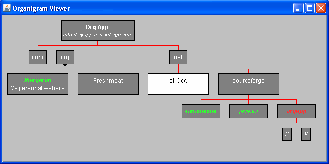
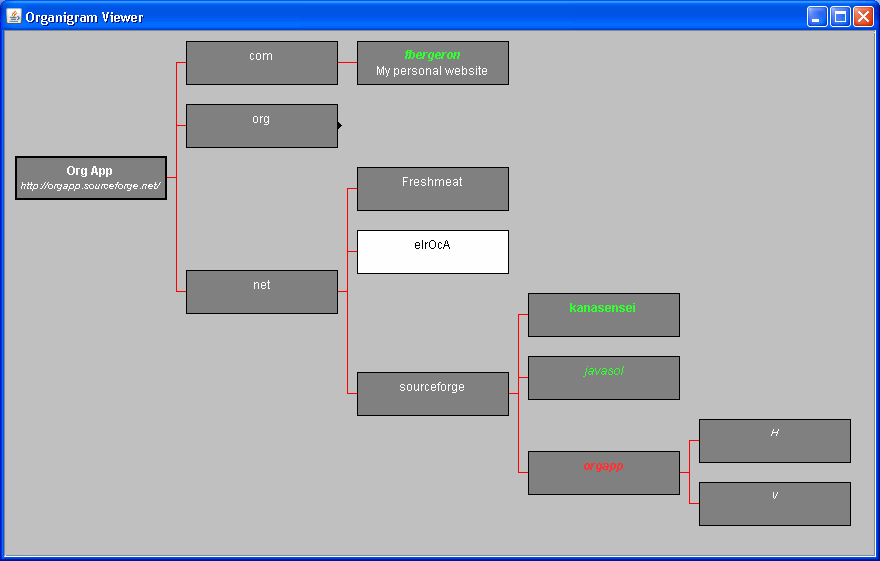
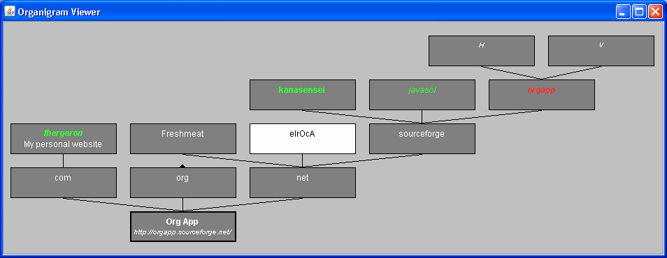
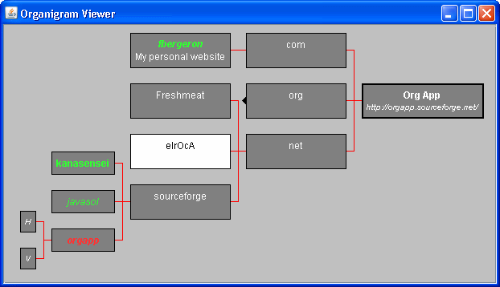

Copyright (c) 2005-2012 Frédéric Bergeron & eIrOcA (eNrIcO Croce & sImOnA Burzio)
Copyright (c) 2005-2012 Frédéric Bergeron & eIrOcA (eNrIcO Croce & sImOnA Burzio)
OrgApp is a Java library to handle and draw organization charts (organigrams).
The library has also an applet and a Swing Java client able to view an organization chart read from a file, in different formats (one of them based upon XML).
The applet supports charts with different layouts and boxes with hyperlinks, customizable colors, sizes, positions, ... and it is easy to embed in an HTML page.
OrgApplet.jar is the applet to view the charts, the applet requires a browser supporting Java Plug-in (with a Java version higher than 1.5). The syntax is:
<applet name="Organigram" code="OrganigramApplet.class" archive="URLTO_OrgApplet.jar">
<param name="Target" value="_blank" />
<param name="DataSource" value="URLTO_organigram.xml" />
<param name="Data" value="embedded organization chart definition" />
<param name="DataType" value="type of the definition" />
</applet>
The parameters meaning is:
Check the source page to see a real usage.
OrgApp.jar is a stand alone Java application to view the organization chart, that can be launched with the syntax:
java -jar OrgApp.jar path_to_organigram.xml
where path_to_organigram.xml is obviously the path to the organigram in any of the supported format.
Convert.jar is a tool to transform an organigram file from a format to another, the syntax is:
java -jar Convert.jar input_file output_type
input_file is the path of the input organigram
output_type is the type of the output organigram, with the following encoding: 0 simple organigram format, 1 text organigram, 2 sitemap.
The output will be printed to the screen but can be redirected to a file (adding > path_to_output to the command).
The conversion form SOF format to another format can loose lot of information...
See data file of the first organigram and of the second one for examples of the file format, or the SOF file format documentation present inside the doc directory of the distribution.
require_once("lib\OrgApp.inc");
$OC = new OrgApp();
//Set the dimension of the chats $OC->width=400;
$OC->height=300;
//Generate a chart, the data is a URL
$OC->emitRef('data.xml');
//Generate a chart, the data is read from a file and embedded in the html page
$OC->emitFile('data.xml', 0);
//Generate a chart with the data
given
$OC->emitData('<organigram><unit name="Doe, John" department="CEO" role="H"/></organigram>', 0);
It's also available a Dokuwiki plugin here.
 
 
B
|-S
-----------
| | |
B B.. |
|-O ..M
|-O......
Version 0.4.0
Version 0.3.0
Version 0.2.0
Version 0.1.0
Copyright (c) 2005-2012 Frédéric Bergeron & eIrOcA (eNrIcO Croce & sImOnA Burzio)
This program is free software: you can redistribute it and/or modify it under the terms of the GNU Lesser General Public License as published by the Free Software Foundation, either version 3 of the License, or (at your option) any later version.
This program is distributed in the hope that it will be useful, but WITHOUT ANY WARRANTY; without even the implied warranty of MERCHANTABILITY or FITNESS FOR A PARTICULAR PURPOSE. See the GNU Lesser General Public License for more details.
You should have received a copy of the GNU Lesser General Public License along with this program. If not, see http://www.gnu.org/licenses/